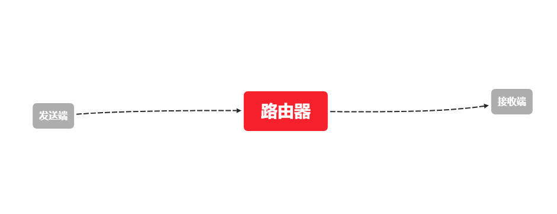
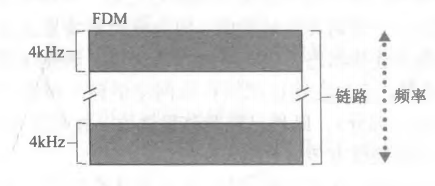
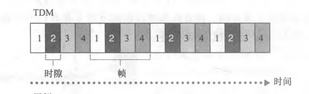
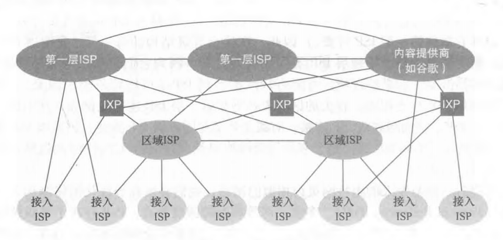
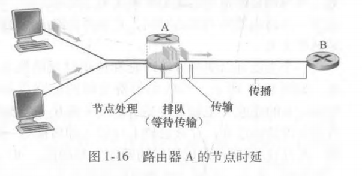
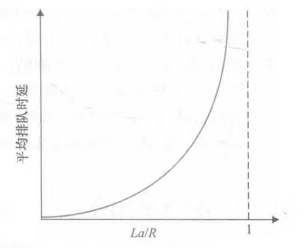
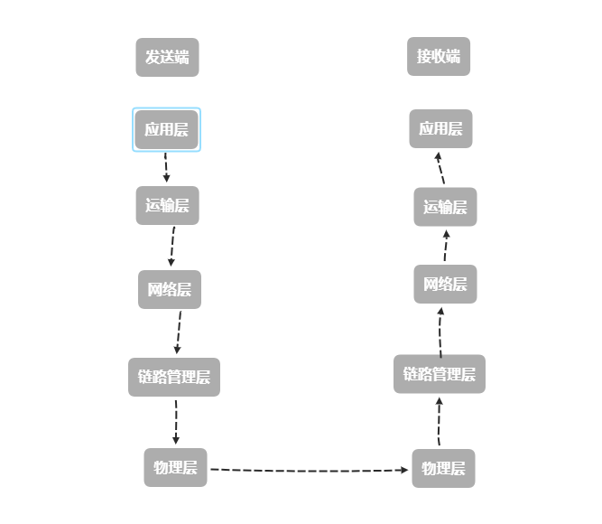
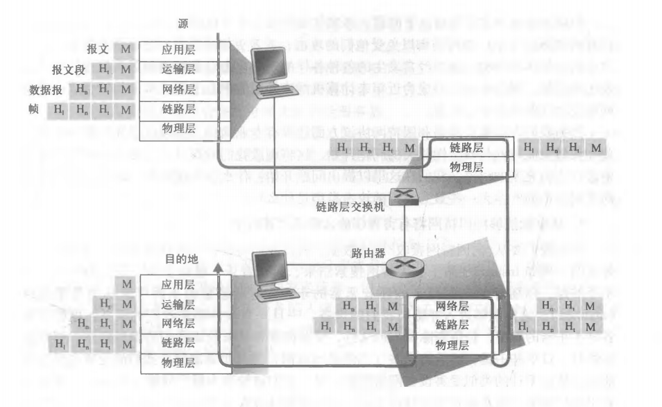

前言概要：知识点是根据《计算机网络：自顶向下方法》来整理的，内容以及其顺序可能与其他书本有出入
这篇博客是根据每一节写出我认为可能会考到的点或者说是需要知道的点，所以仅供参考
# 计算机网络和因特网
# 几个概念（这一部分浅浅地看看就行）
主机（host）或端系统（end system）：因特网中互联的计算设备
通信链路（communication link）和分组交换机（packet switch）：连接因特网中不同主机或端系统的重要工具。
其中，链路的传输速率的单位为 bit/s 或 bps
分组（packet）：不同端系统之间在传输信息时，发送端将数据分段并为每段加上首部字节所形成的信息包。
路由器（router）和链路层交换机（link-layer switch）：分组交换机的两种主要类型。
路径（route 或 path）：在不同端系统之间，一个分组经历的一系列通信链路和分组交换机
Internet Server Provider（ISP）：因特网服务提供商
协议（protocol）：定义了在两个或多个通信实体之间交换的报文的格式和顺序，以及报文发送和 / 或接收一条报文或其他事件所采取的动作。
因特网中两个重要的协议是 TCP/IP 协议（Transmission Control Protocol 传输控制协议 / Internet Protocol 网际协议），IP 协议定义了在路由器和端系统之间发送和接收的分组格式
分布式应用程序 (distributed applicalion)：涉及多个相互交换数据的端系统的应用程序
套接字接口（socket interface）：规定一个主机的某个程序请求因特网向另一个主机的特定程序交付数据的方式的接口
# 网络边缘
# 接入网
概念：将端系统物理连接到其边缘路由器的网格。
接入网一般有以下三类，且方式各不相同：
家庭接入：采用数字用户线（DSL）、电缆、光纤到户（FTTP）、拨号、卫星等方式接入；
企业接入：采用以太网和 WiFi 接入；
广域无线接入：采用第 N 代无线通信技术（我们常说的 4G、5G）和 LTE（长期演进）接入
# 物理媒体
可以类比于我们物理所学的介质，一般分为导引型媒体和非导引型媒体。
导引型媒体一般为固体，比较有代表性的媒体有双绞铜线、同轴电缆、光纤、陆地无线电信道、卫星无线电信道等。
非导引型媒体一般为空气或其他抽象物体，比较有代表性的媒体有无线局域网（WLAN）或数字卫星频道等。
# 网络核心
# 分组交换
报文（message）：包含协议设计者所需的一切东西。它可以包含数据，也可以执行一种控制功能。
概念：端系统彼此交换报文。发送端系统将报文分成若干个较小的数据块（就是我们所说的分组），然后每个分组通过通信链路和分组交换机传送。
# 存储转发传输
概念：交换机在能够向输出链路传输某个分组的第一个比特之前，必须要接收整个分组。
就是说，发送端在向接收端传输一个分组时，接收端会将先到达的比特（分组的一部分）储存在缓存区，等到整个分组到达后，接收端才会向出链路传递这个分组
假设传输速率为 R bps，两端之间的距离为 L，那么接收端接收到整个分组所需的时间为 L/R s
如果接收端是路由器，两端分别是发送端和接收端

发送端想要发送 4 个分组给接收端
d = 0 s时，发送端开始发送分组；d = L/R s时，路由器完成接收第一个分组，并开始向接收端发送该分组，同时发送端开始发送第二个分组；d = 2L/R s时，接收端完成接收第一个分组，路由器完成接收第二个分组并开始发送该分组，同时发送端开始发送第三个分组；……
以此类推，当 d = 5L/R s 时，接收端完成接收所有分组
在这种情况下，端到端的时延为 d<sub> 端到端 </sub> = L/R s
一般在按照上述逻辑的情况下，分组在通过由 N 条速率均为 R 的链路组成的路径时，端到端的时延是
d<sub> 端到端 </sub> = (N * L)/R
# 排队时延和分组丢失
输出缓存（output buffer，也叫输出队列）：用于存储路由器准备发往某条链路的分组；
排队时延（queuing delay）：从进入输出缓存等待到发送的这一段时间。产生的原因是传输的链路正忙于传输其他分组。它的大小取决于网络的拥塞程度；
分组丢失（丢包，pocket loss）：输出缓存已经被正在排队的分组给填满，会出现排队中的分组之一或到达的分组被丢弃的状况
# 转发表和路由选择协议
转发表（forwarding table）：用于将目的地址映射为输出链路。
每个路由器都具有一个转发表，某分组到达某台路由器时，该路由器会检查目的地址，并用这个地址搜索其转发表，用于发现适当的输出链路。
# 电路交换
若交换数据采用这个方式时，当两个端系统进行数据交换的时候，端系统与端系统之间会建立一条端到端的连接。沿着发送方和接收方这条路径上的交换机都将为该连接维护连接状态。
上述例子表明，端到端之间在传输信息之前会先建立一条连接，然后两端之间路径上的交换机会维持连接状态（占用一定数量的带宽），结束后会将占用带宽归还。
# 电路交换网络中的复用
# 频分复用（Frequency-Division Multiplexing，FDM）
~~ 书上说的读不太懂，不知道是不是翻译问题。~~ 大概总结一下，就是用户在分配到一定的频带后，在通信过程中自始至终都占用这个频带。
（书上说的是：链路的频谱由跨越链路创建的所有连接共享。特别是，在连接期间链路为每条连接专用一个频段）
下图则是 FDM 的图示，各路信号在同样的时间占用不同的带宽（这里指的是频带宽度而不是不是数据传输速率）

咱之前听收音机或者在坐车时，收听的广播就是用频分复用的方式来给我们传递信息的
# 时分复用（Time-Devision Multiplexing，TDM）
在这条链路中，时间会被等分为一段段 TDM 帧，每一段帧又会被划分出相同且固定的时隙。当网络跨越一条链路创建一条连接时，网络在每个帧中为该连接指定一个时隙。这些时隙专门由该连接单独使用，一个时隙（在每个帧内）可用于传输该连接的数据。
下图是 TDM 的图示，序号 2 则是指定传输数据的专用时隙，周期为一个帧的长度。
在计算 TDM 传输速率时，若每秒传输 2000 帧，一个时隙大小是 8bit，则传输速率为 16kbps

# 网络的网络
这个倒是没啥可说的，直接上图

接入 ISP 被称为客户；
IXP（Internet Exchange Point）是因特网交接点，作用是可以使多个 ISP 对等，对等的目的是直接将若干个 ISP 网络连接到一起，这样可以减少对第三方提供商的依赖，减少了数据传输成本
除了第一层，客户与其他 ISP 可以选择多个 ISP 连接，这样可以在一个 ISP 无法正常运作的情况下，客户与其他 ISP 仍然能正常进行数据交换
# 分组交换网中的时延、丢包和吞吐量
# 分组交换网中的时延概述
几个重要的时延：节点处理时延 (nodal processing delay)、 排队时延 (queuing delay)、传输时延 (transmission delay)、传播时延 (propagation delay)
这几种时延加起来就是节点总时延（total nodal delay）

一个类比来表明传输时延和传播时延的区别：前者指的是声音从嗓子到嘴巴这一段所需的时间，后者则是从一处传到另一处时，另一处完全接收到声音所需的时间
处理时延是以微秒或者更低的数量级作为单位，排队时延是以毫秒或微秒作为单位，传输时延和传播时延是以毫秒为作为单位
因此在计算的时候一定要注意单位，如果题目无说明，那么时延计算出秒时就要警惕起来（umm，总时延除外？）
令 d<sub>proc</sub>、d<sub>queue</sub>、d<sub>trans</sub>、d<sub>prop</sub > 来表示处理时延、排队时延、传输时延、传播时延，那么节点总时延为：
d<sub>nodal</sub> = d<sub>proc</sub>+d<sub>queue</sub>+d<sub>trans</sub>+d<sub>prop</sub>
# 排队时延和丢包
省流：设计系统时流量强度不能大于 1
令 a 表示分组到达队列的平均速率（a 的单位是分组 / 秒，即 pkt/s），R 是从队列中推出比特的速率（相当于传输速率，以 bps 为单位），所有分组都是由 L bits 组成的，队列非常大（能容纳无限数量的 bit）则比特到达队列的平均速率是 La bps，比率 La/R 被称为流量强度（traffic intensity）。
当 La > R 时，比特到达队列的平均速率大于传输速率，如此下去会使排队队列趋近于无穷大，进而导致排队时延无限大
（可以类比于公路上行驶的车辆，若单位时间内进入公路的汽车大于离开公路的汽车，则会导致车辆队列慢慢建立起来，最后导致拥堵）
当 0 < La <= R 时，平均排队时延和流量强度的关系如下图

由于排队容量有限，所以当排队序列被充满后，路由器会将后面到来的分组丢弃掉，这就是常说的丢包
# 端到端时延
用 d<sub>end-end</sub > 表示，则
d<sub>end-end </sub> = N * (d<sub>proc</sub>+d<sub>trans</sub>+d<sub>prop</sub>)
N 是指链路数，那么这一传递过程中有 N-1 个路由器
这个式子是 d<sub> 端到端 </sub> = (N * L)/R 的一般形式
# 计算机网络中的吞吐量
这个没啥好说的，理解瞬时吞吐量和平均吞吐量就行
如果数据在传输中会经过不同链路，且不同链路速度不同，则其传输速率按最小的那一个来算（瓶颈链路）
# 协议层次及其服务模型
# 分层的体系结构
# 协议分层
网络设计者以分层的形式组织协议和实现这些协议的网络硬件和软件，即每一层的服务模型
各层的所有协议称为协议栈。
因特网的协议栈自顶向下为：应用层，运输层，网络层，管理层，物理层
ISO OSI 参考模型为：应用层，表示层，会话层，运输层，网络层，管理层，物理层

# 应用层
应用层是网络应用程序和它们的应用层协议留存的地方。
应用层包含了许多协议，如 HTTP（提供 Web 请求和文档的传送，SMTP（提供电子邮件报文的传送），FTP（提供两个段系统之间的文件传送）
位于应用层的信息分组称为报文
# 运输层
运输层在应用程序端点之间传送应用层报文。
运输层也包含着协议，如 TCP 和 UDP，前者提供面向连接的服务，后者提供无连接服务。我们只要选其中一个就可以运输应用层报文。
位于应用层的信息分组称为报文段
# 网络层
网络层负责将网络层分组从一台主机移动到另一台主机。
网络层也包含着协议，如网际协议 IP，它定义了在数据报中的各个字段以及端系统和路由器如何作用于这些字段。
位于网络层的信息分组称为数据报
# 链路（管理）层
链路层用于将分组从一个节点移动到路径上的下一个节点。
链路层也包含着协议，如 DOCSIS，它是关于以太网、WiFi 和电缆接入网的协议。不过应用于链路层的协议决定着链路层提供的服务。
位于链路层的信息分组称为帧
# 物理层
物理层将整个帧的一个个比特从一个节点移动到下一个节点。
物理层也包含着协议，不过是关于如双绞铜线，同轴电缆等等
其实，从上述描述中就可以知道为什么是自顶向下的方法了，因为上一层的数据传输总是依赖着它下一层
传输数据的变化：报文 -> 报文段 -> 数据报 -> 帧 -> 比特
# 封装
info 这里的说法将情况给简化了点
在发送端，一个应用层报文（M）被传送给运输层，运输层收到报文并附加上运输层的首部信息（H<sub>1</sub>），于是乎应用层报文和运输层首部一起构成了运输层报文段。
然后首部将被接收端的运输层使用。运输层向网络层传递该报文段，网络层增加了如源和接收端系统地址等网络层首部信息（H<sub>n</sub>），于是乎就生成了网络层数据报。
接着数据报被传递给链路层。链路层增加它自己的链路层首部信息并生成链路层帧。
照这样看来，每一层的一个分组具有两种类型的字段：首部字段和有效载荷字段，有效载荷字段一般来源于上一层的分组
